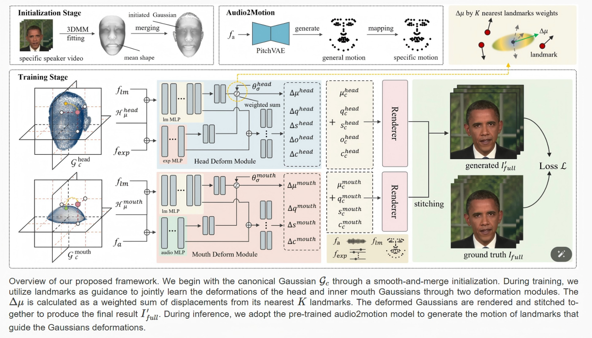
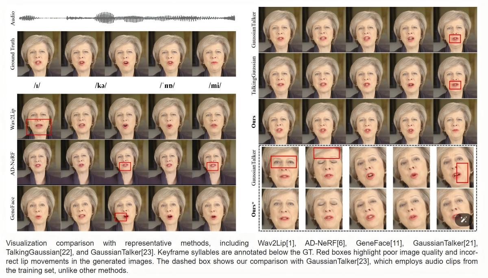
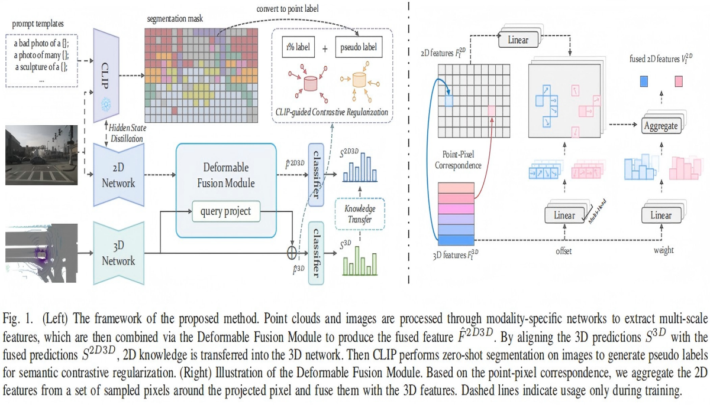
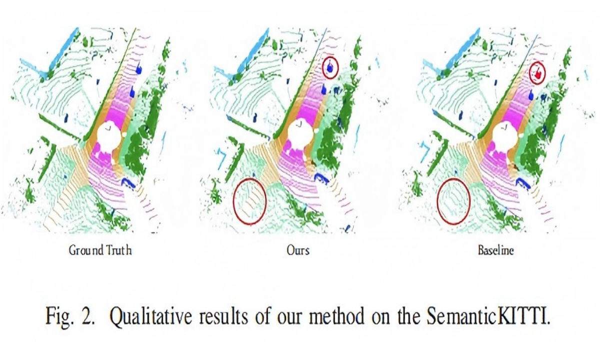

  LMTalker Sparse Landmark-guided Gaussian Splatting for High-fidelity Talking Head Synthesis Paper
  Knowledge Transfer Knowledge Transfer Across Modalities for Weakly Supervised Point Cloud Semantic Segmentation Paper